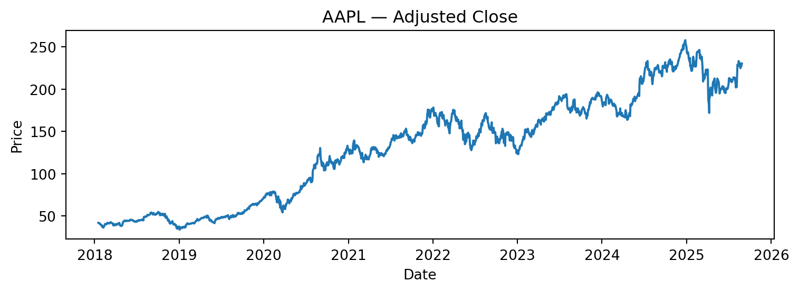
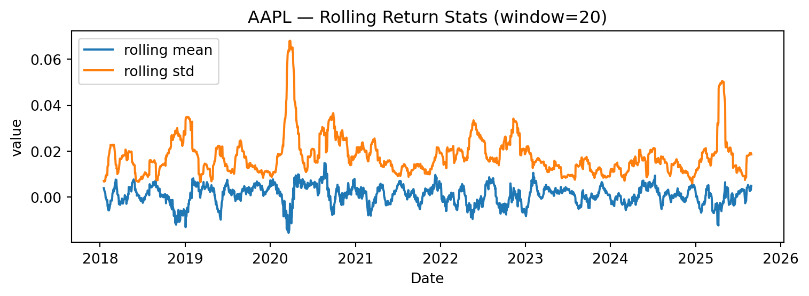

This report is parameterized. To change inputs without editing code, pass -P symbol:MSFT -P start_date:2019-01-01 -P end_date:2025-08-01 -P rolling:30 to quarto render.
PY: /usr/bin/python3
papermill importable? True
Setup if using Python
('AAPL', '2018-01-01', '2025-08-28', 20)
Download and prepare data
Price
close
volume
log_return
roll_mean
roll_vol
Ticker
aapl
aapl
Date
2018-01-17
41.984428
137547200
0.016382
0.003894
0.007023
2018-01-18
42.021935
124773600
0.000893
0.003621
0.006724
2018-01-19
41.834396
129700400
-0.004473
0.002947
0.006823
2018-01-22
41.492142
108434400
-0.008215
0.002088
0.007229
2018-01-23
41.501507
130756400
0.000226
0.001955
0.006963
Price over time
PosixPath('figs/AAPL_price.png')

Daily log returns — histogram
PosixPath('figs/AAPL_hist.png')
Rolling mean & volatility (window = {params.rolling})
PosixPath('figs/AAPL_rolling.png')

Summary table
n_days
start
end
mean_daily_ret
std_daily_ret
ann_vol_approx
0
1914
2018-01-17
2025-08-27
0.000898
0.019663
0.312136
Note: Educational use only. This is not trading advice.
Source Code
---title: "Stock EDA"format: html: toc: true number-sections: falseexecute: echo: false warning: false cache: false # keep off while testing paramsjupyter: python3params: symbol: "AAPL" start_date: "2018-01-01" end_date: "" rolling: 20---::: callout-noteThis report is parameterized. To change inputs without editing code, pass`-P symbol:MSFT -P start_date:2019-01-01 -P end_date:2025-08-01 -P rolling:30` to `quarto render`.:::```{python}import sys, importlib.utilprint("PY:", sys.executable)print("papermill importable?", importlib.util.find_spec("papermill") isnotNone)```## Setup if using Python```{python}#| tags: [parameters]# Default values (overridden by -P at render time)SYMBOL ="AAPL"START ="2018-01-01"END =""ROLL =20``````{python}import os, pathlibpathlib.Path("figs").mkdir(parents=True, exist_ok=True)`````` {python}import pandas as pdimport numpy as npimport matplotlib.pyplot as pltimport yfinance as yffrom pathlib import Pathfrom datetime import datetime# Read parameters if using R# SYMBOL = params.get("symbol", "AAPL")# START = params.get("start_date", "2018-01-01")# END = params.get("end_date", "")# ROLL = int(params.get("rolling", 20))ifnot END: END = pd.Timestamp.today().strftime("%Y-%m-%d")SYMBOL, START, END, ROLL```## Download and prepare data``` {python}# Fetch adjusted OHLCVtry: data = yf.download(SYMBOL, start=START, end=END, auto_adjust=True, progress=False)exceptExceptionas e:print("yfinance failed, falling back to synthetic series:", e) idx = pd.bdate_range(START, END) rng = np.random.default_rng(42) ret = rng.normal(0, 0.01, len(idx)) price =100* np.exp(np.cumsum(ret)) vol = rng.integers(1e5, 5e6, len(idx)) data = pd.DataFrame({"Close": price, "Volume": vol}, index=idx)# Tidy & featuresdf = data.rename(columns=str.lower).copy()df = df[["close","volume"]].dropna()df["log_return"] = np.log(df["close"]).diff()df["roll_mean"] = df["log_return"].rolling(ROLL, min_periods=ROLL//2).mean()df["roll_vol"] = df["log_return"].rolling(ROLL, min_periods=ROLL//2).std()df = df.dropna()df.head()```## Price over time``` {python}fig, ax = plt.subplots(figsize=(8,3))ax.plot(df.index, df["close"])ax.set_title(f"{SYMBOL} — Adjusted Close")ax.set_xlabel("Date"); ax.set_ylabel("Price")fig.tight_layout()# figpath = Path("reports/figs")/f"{SYMBOL}_price.png"figpath = Path("figs")/f"{SYMBOL}_price.png"#same changes for the rest of the figuresfig.savefig(figpath, dpi=144)figpath```## Daily log returns — histogram``` {python}fig, ax = plt.subplots(figsize=(6,3))ax.hist(df["log_return"], bins=50, alpha=0.8)ax.set_title(f"{SYMBOL} — Daily Log Return Distribution")ax.set_xlabel("log return"); ax.set_ylabel("count")fig.tight_layout()figpath = Path("figs")/f"{SYMBOL}_hist.png"fig.savefig(figpath, dpi=144)figpath```## Rolling mean & volatility (window = {params.rolling})``` {python}fig, ax = plt.subplots(figsize=(8,3))ax.plot(df.index, df["roll_mean"], label="rolling mean")ax.plot(df.index, df["roll_vol"], label="rolling std")ax.set_title(f"{SYMBOL} — Rolling Return Stats (window={ROLL})")ax.set_xlabel("Date"); ax.set_ylabel("value")ax.legend()fig.tight_layout()figpath = Path("figs")/f"{SYMBOL}_rolling.png"fig.savefig(figpath, dpi=144)figpath```## Summary table``` {python}summary = pd.DataFrame({"n_days": [len(df)],"start": [df.index.min().date()],"end": [df.index.max().date()],"mean_daily_ret": [df["log_return"].mean()],"std_daily_ret": [df["log_return"].std()],"ann_vol_approx": [df["log_return"].std()*np.sqrt(252)]})summary``` **Note**: Educational use only. This is not trading advice.